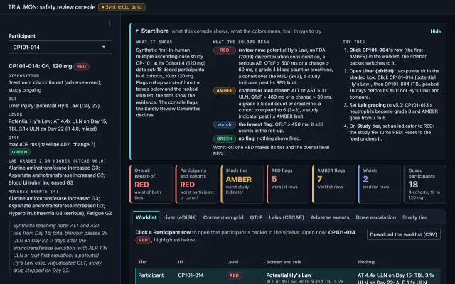
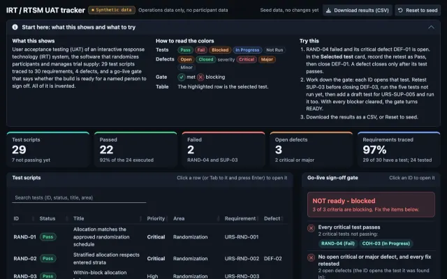
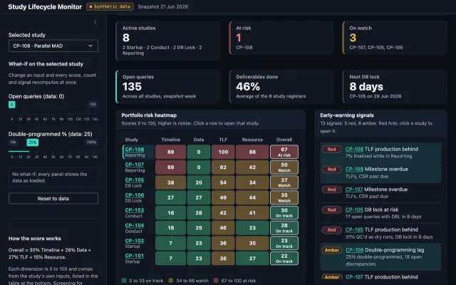

The site's publishing workflow exports these three R Shiny apps with Shinylive, so R starts inside your browser and the console takes several seconds to appear. The first visit downloads about 55 MB, shared with the other two apps on this site; later visits reuse the browser cache. It works best in Chrome or Edge; Safari support may vary. Exported and checked in headless Chrome locally; Safari and Firefox not checked. A Run in browser link appears on a card here only once a dated first-visit check is recorded for that app; until then each card links its read-only snapshot, its guide and the command that runs it in local R.

Monitoring and interim review
Led: DSMB reports (Emmes)Supported: interim data review (Syneos Health)Tools built: this module (runs; tests pass)Gap: DMC charters, group-sequential interim design, BOIN or CRM designRuns (R 4.6.0); tests passSynthetic data
A worked Safety Review Committee example for a first-in-human dose-escalation study: the screening rules, a console that applies them, and the packet a committee would read.
Flags positions for a medical monitor and a committee; it does not adjudicate DLTs or Hy's Law cases.
shiny::runApp("sasr_monitoring_wiki/trialmon_shiny")

Design: randomization logic
Unit and shiny::testServer() tests pass locallySynthetic test data
UAT test-design support from the randomization owner's side: a workbook, a Shiny tracker with a go-live sign-off gate, and a visual guide.
It is not a record of leading IRT UAT execution.
shiny::runApp("uat_irt/shiny")

Operations and delivery
Unit and shiny::testServer() tests pass locallySimulated portfolio
A deliverable status report for a synthetic portfolio of eight studies: a health heatmap, ranked early-warning signals, milestones, data readiness and TLF production.
Operational signals only, not participant-level clinical signals.
shiny::runApp("lifecycle_dashboard/shiny")